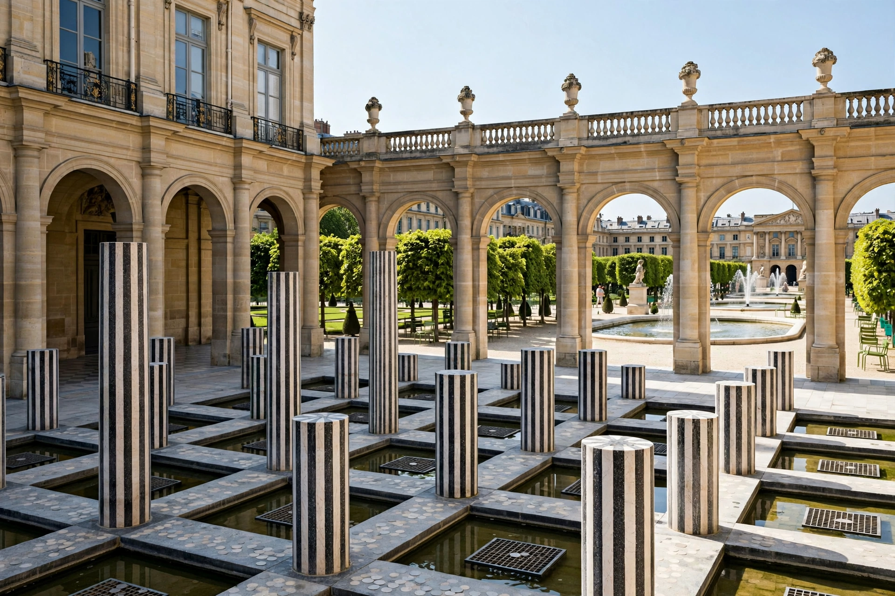

The Palais-Royal (French pronunciation: [pa.lɛ ʁwa.jal]) is a former royal palace located in the 1st arrondissement of Paris, France, just north of the Louvre. Originally called the Palais-Cardinal, it was built for Cardinal Richelieu from 1633 to 1639 to designs by architect Jacques Lemercier.

After Richelieu's death in 1642, the palace was bequeathed to the Crown and renamed Palais-Royal. It served as the Paris residence of the House of Orléans. Anne of Austria and the young Louis XIV lived there during the Fronde. In the 18th century Louis Philippe Joseph d'Orléans, known as Philippe Égalité, opened its gardens to the public and built arcades lined with shops, cafés and theatres, making it a centre of Parisian social and political life on the eve of the French Revolution. Camille Desmoulins famously harangued crowds there on 12 July 1789.
The complex comprises the palace itself, now housing the Conseil d'État, the Constitutional Council and the Ministry of Culture, and a rectangular garden enclosed by arcaded galleries. In the main courtyard, the Cour d'Honneur, artist Daniel Buren installed his controversial striped columns, Les Deux Plateaux, in 1985–86. To the south is the Comédie-Française theatre, also known as the Théâtre-Français.
The gardens remain a quiet public space, noted for their lime trees, fountains, boutiques and restaurants, including the historic Le Grand Véfour, founded in 1784.
See also: Palais des Tuileries, House of Orléans